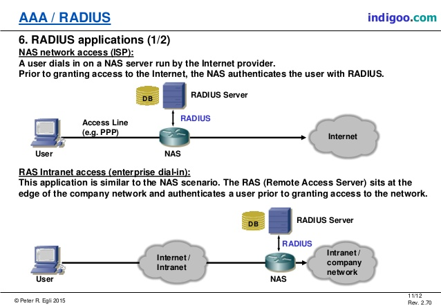
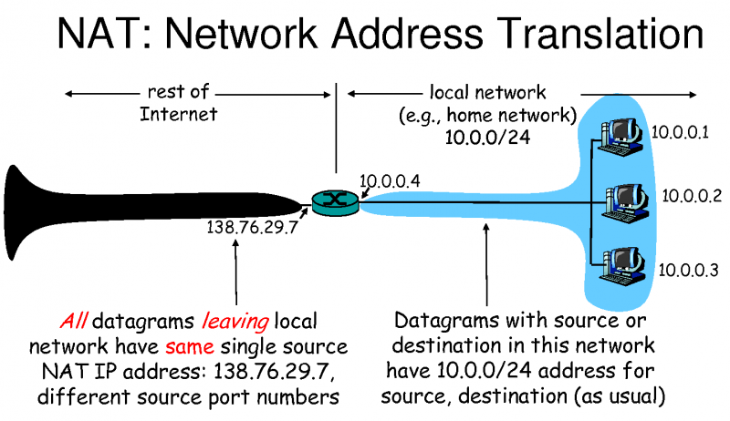
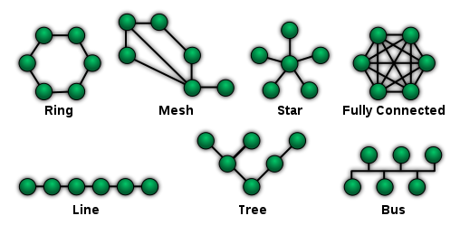
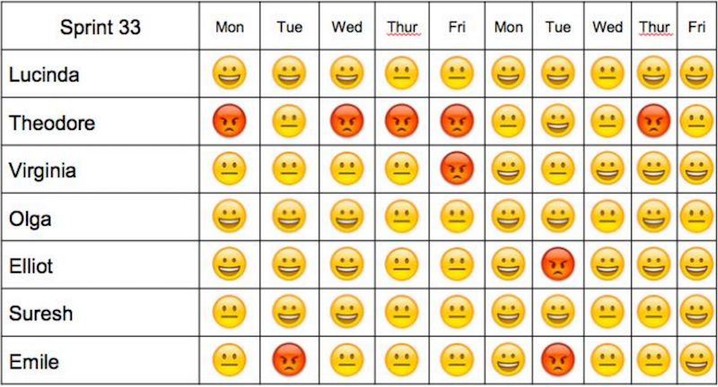
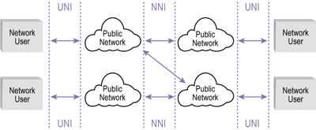
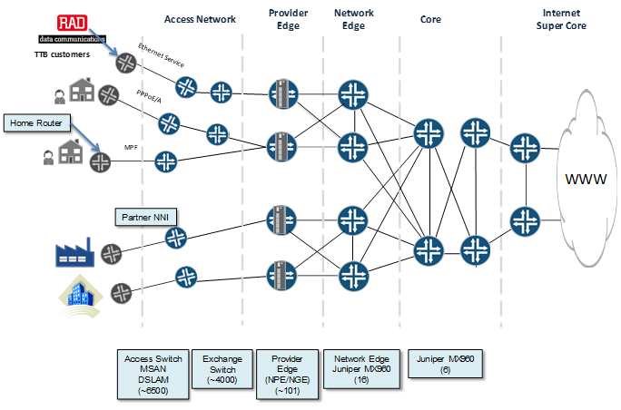
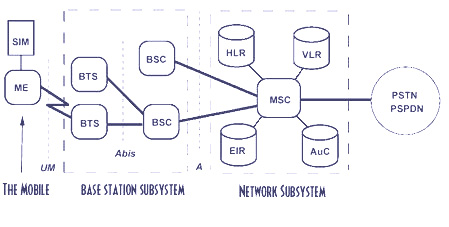
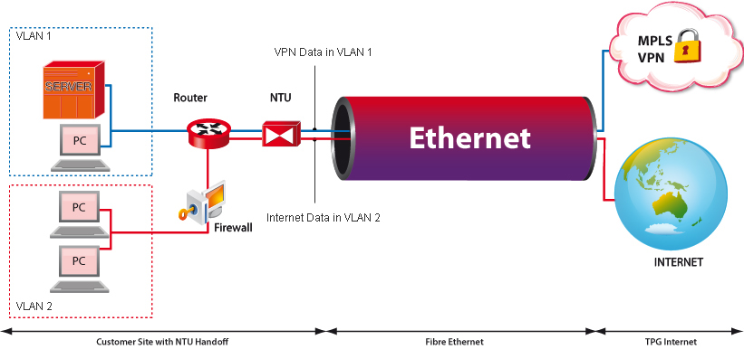

NaaS | Network as a Service | Network as a service (NaaS) describes services for network transport connectivity. NaaS involves the optimization of resource allocations by considering network and computing resources as a unified whole
The term "Network as a service" (NaaS) is often used along with other marketing terms like cloud computing, along with acronyms such as Infrastructure-as-a-Service (IaaS), Platform-as-a-Service (PaaS), Software-as-a-Service (SaaS), and Communication-as-a-Service (CaaS).
NaaS sometimes includes the provision of a virtual network service by the owners of the network infrastructure to a third party. Often this includes network virtualization using a protocol such as OpenFlow.[
Some service models are: - Virtual Private Network (VPN): Extends a private network and the resources contained in the network across networks like the public Internet. It enables a host computer to send and receive data across shared or public networks as if it were a private network with the functionality and policies of the private network.[6]
- Bandwidth on demand (BoD): Technique by which network capacity is assigned based on requirements between different nodes or users. Under this model link rates can be dynamically adapted to the traffic demands of the nodes connected to the link.
- Mobile network virtualization: Model in which a telecommunications manufacturer or independent network operator builds and operates a network (wireless, or transport connectivity) and sells its communication access capabilities to third parties (commonly mobile phone operators) charging by capacity utilization. A mobile virtual network operator (MVNO), is a mobile communications services provider that does not own the radio spectrum or wireless network infrastructure over which it provides services. Commonly a MVNO offers its communication services using the network infrastructure of an established mobile network operator.
|
NAPT | Network Address Port Translation | All IP packets have a source IP address and a destination IP address. Typically packets passing from the private network to the public network will have their source address modified, while packets passing from the public network back to the private network will have their destination address modified. To avoid ambiguity in how replies are translated, further modifications to the packets are required. The vast bulk of Internet traffic uses Transmission Control Protocol (TCP) or User Datagram Protocol (UDP). For these protocols the port numbers are changed so that the combination of IP address and port information on the returned packet can be unambiguously mapped to the corresponding private network destination. RFC 2663 uses the term network address and port translation (NAPT) for this type of NAT. Other names include port address translation (PAT), IP masquerading, NAT overload and many-to-one NAT. This is the most common type of NAT and has become synonymous with the term "NAT" in common usage. |
NAS | Network Access Server | A system that provides access to a network. In some cases also known as a Terminal Server or Remote Access Server (RAS).

|
NAT | Network Address Translation | Network address translation (NAT) is a method of remapping one IP address space into another by modifying network address information in the IP header of packets while they are in transit across a traffic routing device. The technique was originally used as a shortcut to avoid the need to readdress every host when a network was moved. It has become a popular and essential tool in conserving global address space in the face of IPv4 address exhaustion. One Internet-routable IP address of a NAT gateway can be used for an entire private network.
IP masquerading is a technique that hides an entire IP address space, usually consisting of private IP addresses, behind a single IP address in another, usually public address space. The address that has to be hidden is changed into a single (public) IP address as "new" source address of the outgoing IP packet so it appears as originating not from the hidden host but from the routing device itself. Because of the popularity of this technique to conserve IPv4 address space, the term NAT has become virtually synonymous with IP masquerading.
As network address translation modifies the IP address information in packets, it has serious consequences on the quality of Internet connectivity and requires careful attention to the details of its implementation. NAT implementations vary widely in their specific behavior in various addressing cases and their effect on network traffic. The specifics of NAT behavior are not commonly documented by vendors of equipment containing NAT implementations.

|
Native Risk Management |
| See intrinsic risk management. |
NBAP | Node-B Application Part | In the 3GPP UTRAN architecture, NBAP (Node B Application Part) is the signalling protocol responsible for the control of the Node B by the RNC. NBAP is subdivided into Common and Dedicated NBAP (C-NBAP and D-NBAP), where Common NBAP controls overall Node B functionality, and Dedicated NBAP controls radio links to specific user equipment. NBAP forms part of the Iub interface.
NBAP handles two kind of Procedures for different NBAP functionalities Common Procedures for Managing Logical O & M Functions for Controlling BCCH Broadcast for creating new Node B Communication Context Dedicated Procedures for handling procedures of an existing Node B Communication Context in a TTP/CCP. |
| NB-IoT | Narrowband IoT | Narrowband Internet of things (NB-IoT) is a low-power wide-area network (LPWAN) radio technology standard developed by 3GPP for cellular devices and services. The specification was frozen in 3GPP Release 13 (LTE Advanced Pro), in June 2016. Other 3GPP IoT technologies include eMTC (enhanced Machine-Type Communication) and EC-GSM-IoT. NB-IoT focuses specifically on indoor coverage, low cost, long battery life, and high connection density. NB-IoT uses a subset of the LTE standard, but limits the bandwidth to a single narrow-band of 200kHz. It uses OFDM modulation for downlink communication and SC-FDMA for uplink communications. IoT applications which require more frequent communications will be better served by NB-IoT, which has no duty cycle limitations operating on the licensed spectrum. The NB-IoT technology operates using resource blocks on existing LTE networks or in the LTE carrier's guard bands. It can also operate using unused 200 khz bands that were previously used by GSM. 
- Downlink Peak Rate: 250 kbps
- Uplink Peak Rate: 250 kbps (Multi-tone) and 20 kbps (Single Tone)
- Latency: 1.6 to 10 sec
- Duplex Technology: Half Duplex
- Device Receive Bandwidth: 180 kHz
- Device Transmit Power: 20/23 dBm
|
NCSC | National Cyber Security Centre | The National Cyber Security Centre (NCSC) is an organisation of the United Kingdom Government that provides advice and support for the public and private sector in how to avoid computer security threats. Based in London, it became operational in October 2016, and its parent organisation is GCHQ. |
Network Topologies |
| Network topology is the arrangement of the elements (links, nodes, etc.) of a communication network.
Network topology is the topological[3] structure of a network and may be depicted physically or logically. It is an application of graph theory[4] wherein communicating devices are modeled as nodes and the connections between the devices are modeled as links or lines between the nodes. Physical topology is the placement of the various components of a network (e.g., device location and cable installation), while logical topology illustrates how data flows within a network. Distances between nodes, physical interconnections, transmission rates, or signal types may differ between two different networks, yet their topologies may be identical. A network's physical topology is a particular concern of the physical layer of the OSI model. Network topology can be used to define or describe the arrangement of various types of telecommunication networks, including command and control radio networks,[4] industrial fieldbusses, and computer networks.
Examples of network typologies are found in local area networks (LAN), a common computer network installation. Any given node in the LAN has one or more physical links to other devices in the network; graphically mapping these links results in a geometric shape that can be used to describe the physical topology of the network. A wide variety of physical topologies have been used in LANs, including ring, bus, mesh and star. Conversely, mapping the data flow between the components determines the logical topology of the network. In comparison, Controller Area Networks, common in vehicles, are primarily distributed control system networks of one or more controllers interconnected with sensors and actuators over, invariably, a physical bus topology.

|
NFS | Network File System | Network File System (NFS) is a distributed file system protocol originally developed by Sun Microsystems in 1984, allowing a user on a client computer to access files over a computer network much like local storage is accessed. NFS, like many other protocols, builds on the Open Network Computing Remote Procedure Call (ONC RPC) system. The NFS is an open standard defined in Request for Comments (RFC), allowing anyone to implement the protocol. |
NGN | Next Generation Networks | The next-generation network (NGN) is a body of key architectural changes in telecommunication core and access networks. The general idea behind the NGN is that one network transports all information and services (voice, data, and all sorts of media such as video) by encapsulating these into IP packets, similar to those used on the Internet. NGNs are commonly built around the Internet Protocol, and therefore the term all IP is also sometimes used to describe the transformation of formerly telephone-centric networks toward NGN.
According to ITU-T, the definition is:
A next-generation network (NGN) is a packet-based network which can provide services including Telecommunication Services and is able to make use of multiple broadband, quality of Service-enabled transport technologies and in which service-related functions are independent from underlying transport-related technologies. It offers unrestricted access by users to different service providers. It supports generalized mobility which will allow consistent and ubiquitous provision of services to users.
From a practical perspective, NGN involves three main architectural changes that need to be looked at separately: - In the core network, NGN implies a consolidation of several (dedicated or overlay) transport networks each historically built for a different service into one core transport network (often based on IP and Ethernet). It implies amongst others the migration of voice from a circuit-switched architecture (PSTN) to VoIP, and also migration of legacy services such as X.25, frame relay (either commercial migration of the customer to a new service like IP VPN, or technical emigration by emulation of the "legacy service" on the NGN).
- In the wired access network, NGN implies the migration from the dual system of legacy voice next to xDSL setup in local exchanges to a converged setup in which the DSLAMs integrate voice ports or VoIP, making it possible to remove the voice switching infrastructure from the exchange.[2]
- In the cable access network, NGN convergence implies migration of constant bit rate voice to CableLabs PacketCable standards that provide VoIP and SIP services. Both services ride over DOCSIS as the cable data layer standard.
In an NGN, there is a more defined separation between the transport (connectivity) portion of the network and the services that run on top of that transport. This means that whenever a provider wants to enable a new service, they can do so by defining it directly at the service layer without considering the transport layer – i.e. services are independent of transport details. Increasingly applications, including voice, tend to be independent of the access network (de-layering of network and applications) and will reside more on end-user devices (phone, PC, set-top box).
Underlying technology components
Next-generation networks are based on Internet technologies including Internet Protocol (IP) and multiprotocol label switching (MPLS). At the application level, Session Initiation Protocol (SIP) seems to be taking over from ITU-T H.323.
Initially H.323 was the most popular protocol, though its popularity decreased in the "local loop" due to its original poor traversal of network address translation (NAT) and firewalls. For this reason as domestic VoIP services have been developed, SIP has been more widely adopted. However, in voice networks where everything is under the control of the network operator or telco, many of the largest carriers use H.323 as the protocol of choice in their core backbones.[citation needed] With the most recent changes introduced for H.323, it is now possible for H.323 devices to easily and consistently traverse NAT and firewall devices, opening up the possibility that H.323 may again be looked upon more favorably in cases where such devices encumbered its use previously. Nonetheless, most of the telcos are extensively researching and supporting IP Multimedia Subsystem (IMS), which gives SIP a major chance of being the most widely adopted protocol.
For voice applications one of the most important devices in NGN is a Softswitch – a programmable device that controls Voice over IP (VoIP) calls. It enables correct integration of different protocols within NGN. The most important function of the Softswitch is creating the interface to the existing telephone network, PSTN, through Signalling Gateways and Media Gateways. However, the Softswitch as a term may be defined differently by the different equipment manufacturers and have somewhat different functions.
One may quite often find the term Gatekeeper in NGN literature. This was originally a VoIP device, which converted (using gateways) voice and data from their analog or digital switched-circuit form (PSTN, SS7) to the packet-based one (IP). It controlled one or more gateways. As soon as this kind of device started using the Media Gateway Control Protocol, the name was changed to Media Gateway Controller (MGC).
A Call Agent is a general name for devices/systems controlling calls.
The IP Multimedia Subsystem (IMS) is a standardised NGN architecture for an Internet media-services capability defined by the European Telecommunications Standards Institute (ETSI) and the 3rd Generation Partnership Project (3GPP).
|
NGWFQ | Weighted Fair Queueing | See PWFQ
Weighted fair queueing (WFQ) is a network scheduler scheduling algorithm. WFQ is both a packet-based implementation of the generalized processor sharing (GPS) policy, and a natural extension of fair queuing (FQ). Whereas FQ shares the link's capacity in equal subparts, WFQ allows schedulers to specify, for each flow, which fraction of the capacity will be given.
Weighted fair queuing is also known as packet-by-packet GPS (PGPS or P-GPS) since it approximates generalized processor sharing "to within one packet transmission time, regardless of the arrival patterns."

|
Niko-niko Calendar |
| A Niko-niko Calendar is updated daily with each team member's mood for that day. Over time the calendar reveals patterns of change in the moods of the team, or of individual members.

|
NIST | National Institute of Standards and Technology | The National Institute of Standards and Technology (NIST) is a physical sciences laboratory, and a non-regulatory agency of the United States Department of Commerce. Its mission is to promote innovation and industrial competitiveness. NIST's activities are organized into laboratory programs that include nanoscale science and technology, engineering, information technology, neutron research, material measurement, and physical measurement. |
NNI | Network-to-network interface | See UNI
In telecommunications, a network-to-network interface (NNI) is an interface that specifies signalling and management functions between two networks. An NNI circuit can be used for interconnection of signalling (e.g., SS7), Internet Protocol (IP) (e.g., MPLS) or ATM networks.
In networks based on MPLS or GMPLS, NNI is used for the interconnection of core Provider Routers (class 4 or higher). In the case of GMPLS, the type of interconnection can vary across Back-to-Back, EBGP or mixed NNI connection scenarios, depending on the type of VRF exchange used for interconnection. In case of Back-to-Back, VRF is necessary to create VLANs and subsequently sub-interfaces (VLAN headers and DLCI headers for Ethernet and frame relay network packets) on each interface used for the NNI circuit. In the case of eBGP NNI interconnection, P routers are taught how to dynamically exchange VRF records without VLAN creation. NNI also can be used for interconnection of two VoIP nodes. In cases of mixed or full-mesh scenarios, other NNI types are possible.

|
NNTP | Network News Transfer Protocol | The Network News Transfer Protocol (NNTP) is an application protocol used for transporting Usenet news articles (netnews) between news servers and for reading and posting articles by end user client applications. Brian Kantor of the University of California, San Diego and Phil Lapsley of the University of California, Berkeley wrote RFC 977, the specification for the Network News Transfer Protocol, in March 1986. Other contributors included Stan O. Barber from the Baylor College of Medicine and Erik Fair of Apple Computer.
Usenet was originally designed based on the UUCP network, with most article transfers taking place over direct point-to-point telephone links between news servers, which were powerful time-sharing systems. Readers and posters logged into these computers reading the articles directly from the local disk.
As local area networks and Internet participation proliferated, it became desirable to allow newsreaders to be run on personal computers connected to local networks. The resulting protocol was NNTP, which resembled the Simple Mail Transfer Protocol (SMTP) but was tailored for exchanging newsgroup articles. |
NOC | Network Operation Centre | A network operations center (NOC, pronounced like the word knock), also known as a "network management center", is one or more locations from which network monitoring and control, or network management, is exercised over a computer, telecommunication or satellite network. |
Node B |
| Node B is the telecommunications node in particular mobile communication networks, namely those that adhere to the UMTS standard. The Node B provides the connection between mobile phones (UEs) and the wider telephone network. UMTS is the dominating 3G standard.
Node B corresponds to BTS (base transceiver station) in GSM.
Functionality
This is the hardware that is connected to the mobile phone network that communicates directly with mobile handsets. In contrast with GSM base stations, Node B uses WCDMA/TD-SCDMA as the air interface technology. As in all cellular systems, such as UMTS and GSM, the Node B contains radio frequency transmitter(s) and the receiver(s) used to communicate directly with mobile devices, which move freely around it. In this type of cellular network, the mobile devices cannot communicate directly with each other but have to communicate with the NodeB.
Traditionally, the Node Bs have minimum functionality, and are controlled by an RNC (Radio Network Controller). However, this is changing with the emergence of High Speed Downlink Packet Access (HSDPA), where some logic (e.g., retransmission) is handled on the Node B for lower response times. |
Nominal Path |
| Execution path for software system that performs functionality without encountering exceptional conditions. |
Non-functional Requirement |
| Captures requirements such as compatibility, usability, performance, reliability, etc. Also known as the how or how well requirements |
NoSQL |
| A NoSQL (originally referring to "non SQL" or "non relational") database provides a mechanism for storage and retrieval of data that is modeled in means other than the tabular relations used in relational databases. Such databases have existed since the late 1960s, but did not obtain the "NoSQL" moniker until a surge of popularity in the early twenty-first century, triggered by the needs of Web 2.0 companies. NoSQL databases are increasingly used in big data and real-time web applications. NoSQL systems are also sometimes called "Not only SQL" to emphasize that they may support SQL-like query languages.
Motivations for this approach include: simplicity of design, simpler "horizontal" scaling to clusters of machines (which is a problem for relational databases), and finer control over availability. The data structures used by NoSQL databases (e.g. key-value, wide column, graph, or document) are different from those used by default in relational databases, making some operations faster in NoSQL. The particular suitability of a given NoSQL database depends on the problem it must solve. Sometimes the data structures used by NoSQL databases are also viewed as "more flexible" than relational database tables.
Many NoSQL stores compromise consistency (in the sense of the CAP theorem) in favor of availability, partition tolerance, and speed. Barriers to the greater adoption of NoSQL stores include the use of low-level query languages (instead of SQL, for instance the lack of ability to perform ad-hoc joins across tables), lack of standardized interfaces, and huge previous investments in existing relational databases.[ Most NoSQL stores lack true ACID transactions, although a few databases, such as MarkLogic, Aerospike, FairCom c-treeACE, Google Spanner (though technically a NewSQL database), Symas LMDB, and OrientDB have made them central to their designs. (See ACID and join support.)
Instead, most NoSQL databases offer a concept of "eventual consistency" in which database changes are propagated to all nodes "eventually" (typically within milliseconds) so queries for data might not return updated data immediately or might result in reading data that is not accurate, a problem known as stale reads. Additionally, some NoSQL systems may exhibit lost writes and other forms of data loss. Some NoSQL systems provide concepts such as write-ahead logging to avoid data loss. For distributed transaction processing across multiple databases, data consistency is an even bigger challenge that is difficult for both NoSQL and relational databases. Even current relational databases "do not allow referential integrity constraints to span databases." There are few systems that maintain both ACID transactions and X/Open XA standards for distributed transaction processing. |
NPE | Network Provider Edge | A Provider Edge router (PE router) is a router between one network service provider's area and areas administered by other network providers. A network provider is usually an Internet service provider as well (or only that).#

|
NSS | Network switching subsystem | Network switching subsystem (NSS) (or GSM core network) is the component of a GSM system that carries out call out and mobility management functions for mobile phones roaming on the network of base stations. It is owned and deployed by mobile phone operators and allows mobile devices to communicate with each other and telephones in the wider public switched telephone network4g LET(PSTN). The architecture contains specific features and functions which are needed because the phones are not fixed in one location.
The NSS originally consisted of the circuit-switched core network, used for traditional GSM services such as voice calls, SMS, and circuit switched data calls. It was extended with an overlay architecture to provide packet-switched data services known as the GPRS core network. This allows mobile phones to have access to services such as WAP, MMS and the Internet.

|
NTP | Network Time Protocol
| Network Time Protocol (NTP) is a networking protocol for clock synchronization between computer systems over packet-switched, variable-latency data networks. In operation since before 1985, NTP is one of the oldest Internet protocols in current use. NTP was designed by David L. Mills of the University of Delaware.
NTP is intended to synchronize all participating computers to within a few milliseconds of Coordinated Universal Time (UTC).[1]:3 It uses the intersection algorithm, a modified version of Marzullo's algorithm, to select accurate time servers and is designed to mitigate the effects of variable network latency. NTP can usually maintain time to within tens of milliseconds over the public Internet, and can achieve better than one millisecond accuracy in local area networks under ideal conditions. Asymmetric routes and network congestion can cause errors of 100 ms or more |
NTS | Number Translation Service | A number translation service translates a dialled telephone number, typically beginning 08 in the UK to a geographical 'connect number' beginning 01 or 02 in the UK. The connect number may be changed without changing the published dialled number. Originally NTS numbers were used, for example, to allow any caller to dial a local call to the called party irrespective of location, saving money if the connect number was not also a local call, but the system gradually came to be seen as a way of making money and now most phone companies charge the caller more for 08 numbers than for 01, 02 or 03 numbers. |
NTU | Network Termination Unit
| Point between user and operator network

|
NTU | Network Termination Unit | In telecommunications, a network interface device (NID; also known by several other names) is a device that serves as the demarcation point between the carrier's local loop and the customer's premises wiring. Outdoor telephone NIDs also provide the subscriber with access to the station wiring and serve as a convenient test point for verification of loop integrity and of the subscriber's inside wiring. |
NYB | Not Yet Built data | Royal Mail Not Yet Built data |
{kind=link}
{kind=link}
{kind=link}
{kind=link}
{kind=link}
{kind=link}
{kind=link}
{kind=link}
{kind=link}